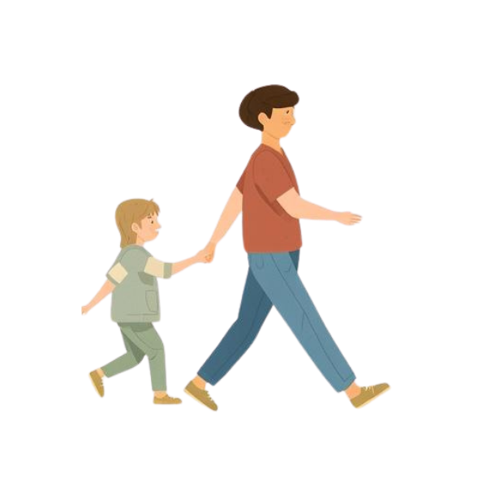
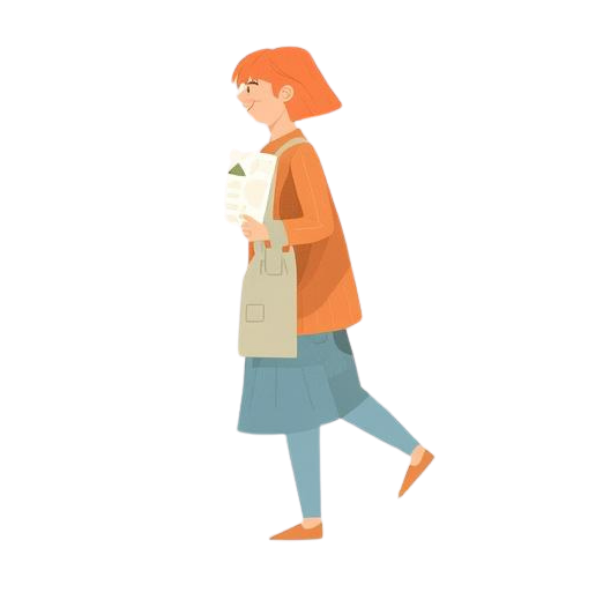
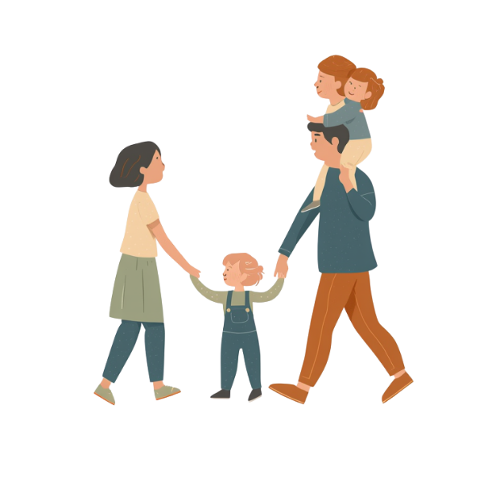
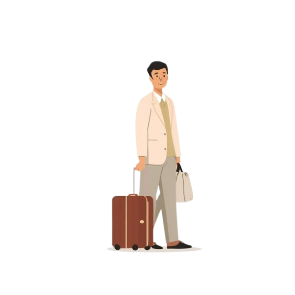
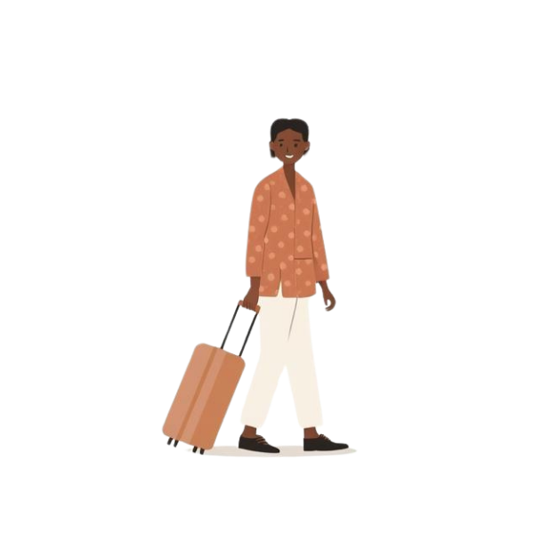
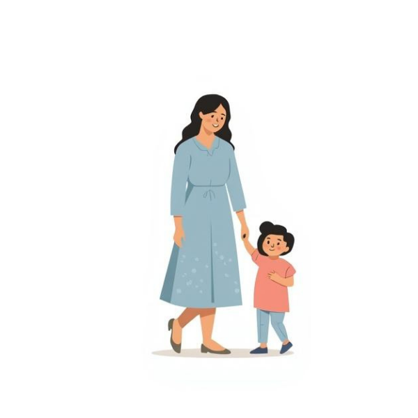
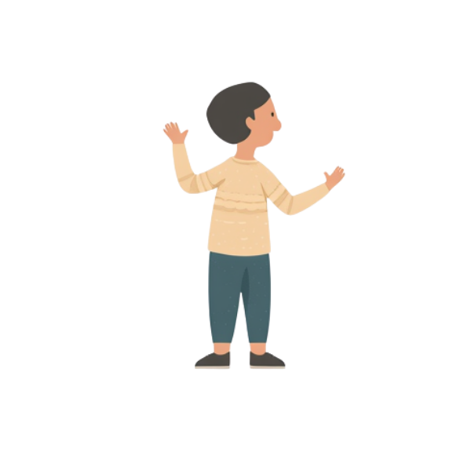
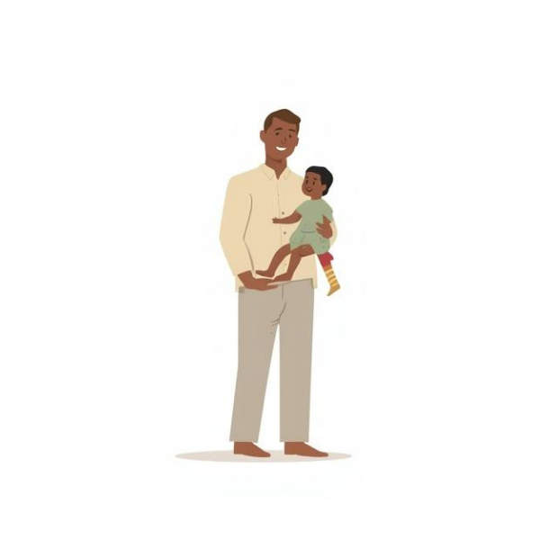
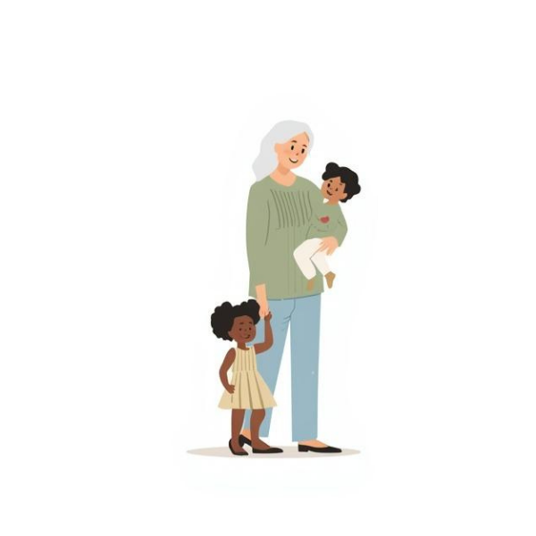

🇹🇼
Taiwan
Taipei
台湾・台北
子どもと一緒に来ると、もっと好きになる街。
台湾・台北
子どもと一緒に来ると、もっと好きになる街。

台湾は子連れにとって最高に優しい旅先。
親切な人・安くておいしいご飯・至る所に授乳室。
初めて子どもを連れて台北に行ったとき、街全体が子連れを歓迎してくれているように感じました。MRTの駅には必ずエレベーターがあり、ベビーカーでも全く困らない。夜市ではあちこちで地元の人が子どもに話しかけてきて、気づけばその家族と一緒に食べ歩きしていたりして。
食事の安さと美味しさは格別です。小籠包・ルーローハン・牛肉麺、子どもが絶対好きな味ばかり。日本と時差が1時間しかないのも子連れにはありがたい。体への負担が本当に少ない。

饒河街観光夜市。台湾の夜市文化は、子ども連れにとって最高の体験のひとつ。
MRT（地下鉄）が清潔で安く、ベビーカーも乗れる。悠遊カードで乗れる。
夜市・小籠包・ルーローハン。子どもが好きな味が必ずある。
日本語対応可能な病院もあり、清潔で安心。
困っていると必ず助けてくれる。子連れ歓迎の空気感。

「士林夜市は期待通りでした。4歳の娘が台湾かき氷を見た瞬間の目の輝きが忘れられない。2歳の息子も地元の人にすごくかわいがってもらって。困ったことが一度もなかった旅行でした。春（4〜5月）に行ったのも大正解。」
— サワディー（2024年訪問・子ども2歳・4歳）


行く前に、ちょっとだけ。
知っておくと、旅がちょっとだけ楽しくなること。それだけを集めました。知らなくても全然大丈夫です。

台湾。準備をして行けば、本当に困ることが少ない旅先です。

緊急番号：119（救急）・110（警察）
旅行者でも無料で呼べます。ためらわずに。
子どもの受診先：
在台日本国台湾交流協会：
台北市慶城街28号
Tel: 02-2713-8000
桃園空港の両替レートは良くない。台北市内の銀行・郵便局が良レートです。
おすすめの方法：
悠遊カード（EASY CARD）
MRTもバスも乗れるプリペイドカード。空港でも購入できます。
子どもの料金：
ベビーカーについて：
MRTはエレベーター完備。ベビーカーのまま乗車可能。
台湾特有のもの：
子連れの定番：
完璧じゃなくていい。伝えようとする気持ちが伝わる。
😊 基本のひと言
👶 子連れならでは
🏥 いざというとき
🚇 交通・移動
子どもと一緒に、台北を歩こう。


今台湾で開催されているイベントをピックアップしてご紹介しています。子連れで楽しめるものを中心に選んでいます。
イベント情報を読み込み中...

誰かの体験が、誰かの地図になる。


Instagramで子連れ台湾体験を探すときのハッシュタグ
サワディーが実際に参考にした YouTube・インスタ・ブログです
キュレーション情報を読み込み中...
台湾に行ったことある人の話、聞かせてください
「士林夜市は期待通りでした。4歳の娘が台湾かき氷を見た瞬間の目の輝きが忘れられない。2歳の息子も地元の人にすごくかわいがってもらって。困ったことが一度もなかった旅行でした。春（4〜5月）に行ったのも大正解。」
Wamilyは、実際に行った人たちと一緒に育てていきたいガイドブックです。あなたの台湾体験——楽しかったことも、ちょっと困ったことも——それがいつか誰かの旅を変えるかもしれない。そんな場所にできたらいいなと思っています。
台湾での親子旅の体験を #wamily台湾 でシェアしていただけると、とても嬉しいです。
📷 #wamily台湾 を見る